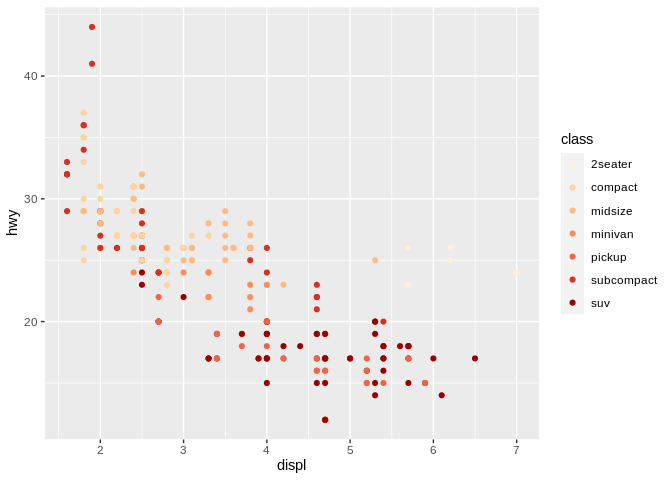
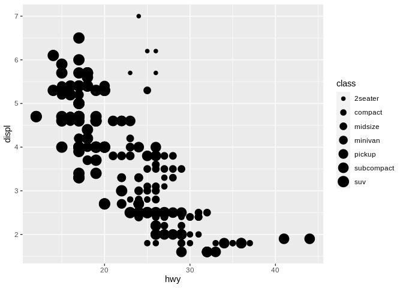
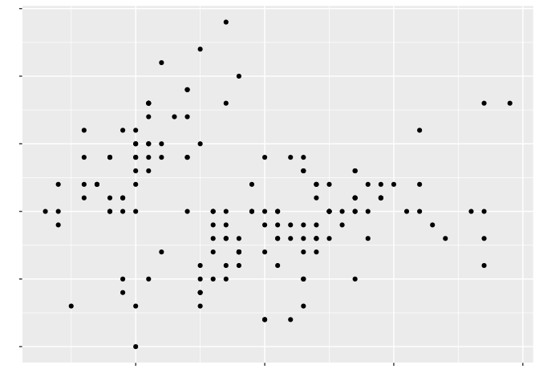
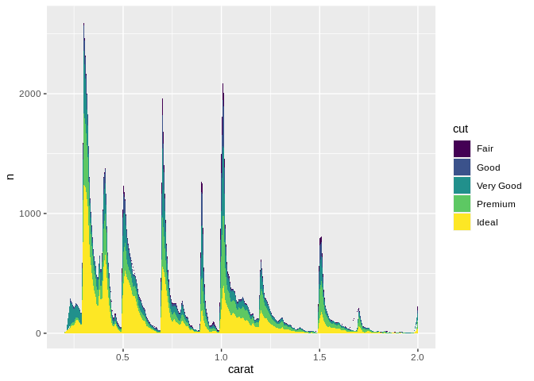
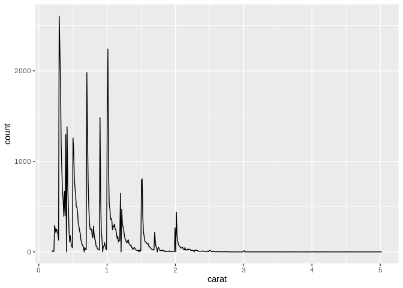

(Note: this is part two of a three part series on data visualization, originally published on Towards Data Science in 2019.
Let’s move from theoretical considerations of graphing to the actual building blocks you have at your disposal. As we do so, we’re also going to move on to mantra #2:
Everything should be made as simple as possible – but no simpler.
Graphs are inherently a 2D image of our data:

They have an x and a y scale, and - as in our scatter plot here - the position a point falls along each scale tells you how large its values are. But this setup only allows us to look at two variables in our data - and we’re frequently interested in seeing relationships between more than two variables.
So the question becomes: how can we visualize those extra variables? We can try adding another position scale:

But 3D images are hard to wrap your head around, complicated to produce, and not as effective in delivering your message. They do have their uses - particularly when you’re able to build real, physical 3D models, and not just make 3D shapes on 2D planes - but frequently aren’t worth the trouble.
So what tools do we have in our toolbox? The ones that are generally agreed upon (no, really - this is an area of active debate) fall into four categories:
- Position (like we already have with X and Y)
- Color
- Shape
- Size
These are the tools we can use to encode more information into our graphics. We’re going to call these aesthetics, but any number of other words could work - some people refer to them as scales, some as values. I call them aesthetics because that’s what my software of choice calls them - but the word itself comes from the fact that these are the things that change how your graph looks.
For what it’s worth, we’re using an EPA data set for this unit, representing fuel economy data from 1999 and 2008 for 38 popular models of car. “Hwy” is highway mileage, “displ” is engine displacement (so volume), and “cty” is city mileage. But frankly, our data set doesn’t matter right now - most of our discussion here is applicable to any data set you’ll pick up.
We’re going to go through each of these aesthetics, to talk about how you can encode more information in each of your graphics. Along the way, remember our mantras:
- A good graphic tells a story
- Everything should be made as simple as possible - but no simpler
- Use the right tool for the job
- Ink is cheap. Electrons are even cheaper
We’ll talk about how these are applicable throughout this section.
Position
Let’s start off discussing these aesthetics by finishing up talking about position. The distance of values along the x, y, or – in the case of our 3D graphic – z axes represents how large a particular variable is. People inherently understand that values further out on each axis are more extreme - for instance, imagine you came across the following graphic (made with simulated data):

Which values do you think are higher?
Most people innately assume that the bottom-left hand corner represents a 0 on both axes, and that the further you get from that corner the higher the values are. This – relatively obvious – revelation hints at a much more important concept in data visualizations: perceptual topology should match data topology. Put another way, that means that values which feel larger in a graph should represent values that are larger in your data. As such, when working with position, higher values should be the ones further away from that lower left-hand corner – you should let your viewer’s subconscious assumptions do the heavy lifting for you.
Applying this advice to categorical data can get a little tricky. Imagine that we’re looking at the average highway mileages for manufacturers of the cars in our data set:

In this case, the position along the x axis just represents a different car maker, in alphabetical order. But remember, position in a graph is an aesthetic that we can use to encode more information in our graphics. And we aren’t doing that here – for instance, we could show the same information without using x position at all:

Try to compare Pontiac and Hyundai on the first graph, versus on this second one. If anything, removing our extraneous x aesthetic has made it easier to compare manufacturers. This is a big driver behind our second mantra – that everything should be made as simple as possible, but no simpler. Having extra aesthetics confuses a graph, making it harder to understand the story it’s trying to tell.
However, when making a graphic, we should always be aiming to make important comparisons easy. As such, we should take advantage of our x aesthetic by arranging our manufacturers not alphabetically, but rather by their average highway mileage: 
By reordering our graphic, we’re now able to better compare more similar manufacturers. It’s now dramatically faster to understand our visualization – closer comparisons are easier to make, so placing more similar values closer together makes them dramatically easier to grasp. Look at Pontiac vs Hyundai now, for instance. Generally speaking, don’t put things in alphabetical order - use the order you place things to encode additional information.
As a quick sidenote, I personally believe that, when working with categorical values along the X axis, you should reorder your values so the highest value comes first. For some reason, I just find having the tallest bar/highest point (or whatever is being used to show value) next to the Y axis line is much cleaner looking than the alternative:

For what it’s worth, I’m somewhat less dogmatic about this when the values are on the Y axis. I personally believe the highest value should always be at the top, as humans expect higher values to be further from that bottom left corner: 
However, I’m not as instantly repulsed by the opposite ordering as I am with the X axis, likely because the bottom bar/point being the furthest looks like a more natural shape, and is still along the X axis line: 
For this, at least, your mileage may vary. Also, it’s worth pointing out how much cleaner the labels on this graph are when they’re on the Y axis - flipping your coordinate system, like we’ve done here, is a good way to display data when you’ve got an unwieldy number of categories.
Color
While we’ve done a good job covering the role position plays in communicating information, we’re still stuck on the same question we started off with: How can we show a third variable on the graph?
One of the most popular ways is to use colors to represent your third variable. It might be worth talking through how color can be used with a simulated data set. Take for example the following graph: 
And now let’s add color for our third variable: 
Remember: perceptual topology should match data topology. Which values are larger?
Most people would say the darker ones. But is it always that simple? Let’s change our color scale to compare: 
Sure, some of these colors are darker than others – but I wouldn’t say any of them tell me a value is particularly high or low.
That’s because humans don’t percieve hue – the actual shade of a color – as an ordered value. The color a point is doesn’t communicate that the point has a higher or lower value than any other point on the graph. Instead, hue works as an unordered value, which only tells us which points belong to which groupings. In order to tell how high or low a point’s value is, we instead have to use luminescence – or how bright or dark the individual point is.
There’s one other axis you can move colors along in order to encode value – how vibrant a color is, known as chroma:

Just keep in mind that luminescence and chroma – how light a color is and how vibrant it is – are ordered values, while hue (or shade of color) is unordered This becomes relevant when dealing with categorical data. For instance, moving back to the scatter plot we started with:

If we wanted to encode a categorical variable in this – for instance, the class of vehicle – we could use hue to distinguish the different types of cars from one another:

In this case, using hue to distinguish our variables clearly makes more sense than using either chroma or luminesence:

This is a case of knowing what tool to use for the job - chroma and luminescence will clearly imply certain variables are closer together than is appropriate for categorical data, while hue won’t give your audience any helpful information about an ordered variable. Note, though, that I’d still discourage using the rainbow to distinguish categories in your graphics – the colors of the rainbow aren’t exactly unordered values (for instance, red and orange are much more similar colors than yellow and blue), and you’ll wind up implying connections between your categories that you might not want to suggest. Also, the rainbow is just really ugly:

Speaking of using the right tool for the job, one of the worst things people like to do in data visualizations is overuse color. Take for instance the following example:

In this graph, the variable “class” is being represented by both position along the x axis, and by color. By duplicating this effort, we’re making our graph harder to understand – encoding the information once is enough, and doing it any more times than that is a distraction. Remember the second mantra: Everything should be made as simple as possible – but no simpler. The best data visualization is one that includes all the elements needed to deliver the message, and no more.
You can feel free to use color in your graphics, so long as it adds more information to the plot - for instance, if it’s encoding a third variable:

But replicating as we did above is just adding more junk to your chart.
There’s one last way you can use color effectively in your plot, and that’s to highlight points with certain characteristics:

Doing so allows the viewer to quickly pick out the most important sections of our graph, increasing its effectiveness. Note that I used shape instead of color to separate the class of vehicles, by the way – combining point highlighting and using color to distinguish categorical variables can work, but can also get somewhat chaotic:

There’s one other reason color is a tricky aesthetic to get right in your graphics: about 5% of the population (10% of men, 1% of women) can’t see colors at all. That means you should be careful when using it in your visualizations – use colorblind-safe color palettes (google “ColorBrewer” or “viridis” for more on these), and pair it with another aesthetic whenever possible.
Shape
The easiest aesthetic to pair color with is the next most frequently used – shape. This one is much more intuitive than color – to demonstrate, let’s go back to our scatter plot:

We can now change the shape of each point based on what class of vehicle it represents: 
Imagine we were doing the same exercise as we did with color earlier – which values are larger?
I’ve spoiled the answer already by telling you what the shapes represent – none of them are inherently larger than the others. Shape, like hue, is an unordered value.
The same basic concepts apply when we change the shape of lines, not just points. For instance, if we plot separate trendlines for front-wheel, rear-wheel, and four-wheel drive cars, we can use linetype to represent each type of vehicle:

But even here, no one linetype implies a higher or lower value than the others.
There are two caveats to be made to this rule, however. For instance, if we go back to our original scatter plot and change which shapes we’re using:

This graph seems to imply more connection between the first three classes of car (which are all different types of diamonds) and the next three classes (which are all types of triangle), while singling out SUVs. In this way, we’re able to use shape to imply connection between our groupings - more similar shapes, which differ only in angle or texture, imply a closer relationship to one another than to other types of shape. This can be a blessing as well as a curse - if you pick, for example, a square and a diamond to represent two unrelated groupings, your audience might accidentally read more into the relationship than you had meant to imply.
It’s also worth noting that different shapes can pretty quickly clutter up a graph. As a general rule of thumb, using more than 3-4 shapes on a graph is a bad idea, and more than 6 means you need to do some thinking about what you actually want people to take away.
Size
Our last aesthetic is that of size. Going back to our original scatter plot, we could imagine using size like this:

Size is an inherently ordered value - large size points imply larger values. Specifically, humans perceive larger areas as corresponding to larger values - the points which are three times larger in the above graph are about three times larger in value, as well.
This becomes tricky when size is used incorrectly, either by mistake or to distort the data. Sometimes an analyst maps radius to the variable, rather than area of the point, resulting in graphs as the below:

In this example, the points representing a cty value of 10 don’t look anything close to 1/3 as large as the points representing 30. This makes the increase seem much steeper upon looking at this chart – so be careful when working with size as an aesthetic that your software is using the area of points, not radius!
It’s also worth noting that unlike color – which can be used to distinguish groupings, as well as represent an ordered value – it’s generally a bad idea to use size for a categorical variable. For instance, if we mapped point size to class of vehicle:

We seem to be implying relationships here that don’t actually exist, like a minivan and midsize vehicle being basically the same. As a result, it’s best to only use size for continuous (or numeric) data.
A Tangent
Now that we’ve gone over these four aesthetics, I want to go on a quick tangent. When it comes to how quickly and easily humans perceive each of these aesthetics, research has settled on the following order:
- Position
- Size
- Color (especially chroma and luminescence)
- Shape
And as we’ve discussed repeatedly, the best data visualization is one that includes exactly as many elements as it takes to deliver a message, and no more. Everything should be made as simple as possible, but no simpler.
However, we live in a world of humans, where the scientifically most effective method is not always the most popular one. And since color is inherently more exciting than size as an aesthetic, the practitioner often finds themselves using colors to denote values where size would have sufficed. And since we know that color should usually be used alongside shape in order to be more inclusive in our visualizations, size often winds up being the last aesthetic used in a chart. This is fine - sometimes we have to optimize for other things than “how quickly can someone understand my chart”, such as “how attractive does my chart look” or “what does my boss want from me”. But it’s worth noting, in case you see contradictory advice in the future - the disagreement comes from if your source is teaching the most scientifically sound theory, or the most applicable practice.
Summary
We started off this section with our second mantra: that everything should be made as simple as possible, but no simpler. The first half of that cautions us against overusing aesthetics and against adding too much to a graphic, lest we erode its efficency in conveying information:

The second half cautions us against not using all the aesthetics it takes to tell our story, in case we don’t produce the most expressive graphic possible: 
Instead, we should use exactly as many aesthetics as it takes to tell our story, carefully choosing each to encode the most information possible into our graphics: 
As for the specific takeaways from this section, I can think of the following:
- Match perceptual and data topology – if a color or position feels like a higher value, use it to represent data that is a higher value
- Make important comparisons easy – place them near each other, call attention to them
- Use aesthetics to encode more information into your graphics
- Use exactly as many aesthetics as you need – no more, no less.
- Don’t place things in alphabetical order
- Don’t use the rainbow for a color scheme
- Use ordered aesthetics (like position, chroma, luminescence, and size) to show ordered values (like numeric data)
- Use unordered aesthetics (like hue or shape) to show unordered values
Let’s transition away from aesthetics, and towards our third mantra:
Use the right tool for the job.
Think back to our first chart:

As you already know, this is a scatter plot - also known as a point graph. Now say we added a line of best fit to it:

This didn’t stop being a scatter plot once we drew a line on it – but the term scatter plot no longer really encompasses everything that’s going on here. It’s also obviously not a line chart, as even though there’s a line on it, it also has points.
Rather than quibble about what type of chart this is, it’s more helpful to describe what tools we’ve used to depict our data. We refer to these as geoms, short for geometries – because when you get really deep into things, these are geometric representations of how your data set is distributed along the x and y axes of your graph. I don’t want to get too far down that road – I just want to explain the vocabulary so that we aren’t talking about what type of chart that is, but rather what geoms it uses. Framing things that way makes it easier to understand how things can be combined and reformatted, rather than assuming each type of chart can only do one thing.
Two continuous variables
This chart uses two geoms that are really good for graphs that have a continuous y and a continuous x - points and lines. This is what people refer to most of the time when they say a line graph - a single smooth trendline that shows a pattern in the data. However, a line graph can also mean a chart where each point is connected in turn:

It’s important to be clear about which type of chart you’re expected to produce! I always refer to the prior as a trendline, for clarity.
These types of charts have enormous value for quick exploratory graphics, showing how various combinations of variables interact with one another. For instance, many analysts start familiarizing themselves with new data sets using correlation matrices (also known as scatter plot matrices), which create a grid of scatter plots representing each variable:

In this format, understanding interactions between your data is quick and easy, with certain variable interactions obviously jumping out as promising avenues for further exploration.
To back up just a little, there’s one major failing of scatter plots that I want to highlight before moving on. If you happen to have more than one point with the same x and y values, a scatter plot will just draw each point over the previous, making it seem like you have less data than you actually do. Adding a little bit of random noise - for instance, using RAND() in Excel - to your values can help show the actual densities of your data, especially when you’re dealing with numbers that haven’t been measured as precisely as they could a have been. 
One last chart that does well with two continuous variables is the area chart, which resembles a line chart but fills in the area beneath the line: 
Area plots make sense when 0 is a relevant number to your data set – that is, a 0 value wouldn’t be particularly unexpected. They’re also frequently used when you have multiple groupings and care about their total sum:

(This new data set is the “diamonds” data set, representing 54,000 diamonds sizes, qualities, cut, and sale prices. We’ll be going back and forth using it and the EPA data set from now on.)
Now one drawback of stacked area charts is that it can be very hard to estimate how any individual grouping shifts along the x axis, due to the cumulative effects of all the groups underneath them. For instance, there are actually fewer “fair” diamonds at 0.25 carats than at 1.0 – but because “ideal” and “premium” spike so much, your audience might draw the wrong conclusions. In situations where the total matters more than the groupings, this is alright – but otherwise, it’s worth looking at other types of charts as a result.
One continuous variable
If instead you’re looking to see how a single continuous variable is distributed throughout your data set, one of the best tools at your disposal is the histogram. A histogram shows you how many observations in your data set fall into a certain range of a continuous variable, and plot that count as a bar plot:

One important flag to raise with histograms is that you need to pay attention to how your data is being binned. If you haven’t picked the right width for your bins, you might risk missing peaks and valleys in your data set, and might misunderstand how your data is distributed – for instance, look what shifts if we graph 500 bins, instead of the 30 we used above: 
An alternative to the histogram is the frequency plot, which uses a line chart in the place of bars to represent the frequency of a value in your data set: 
Again, however, you have to pay attention to how wide your data bins are with these charts – you might accidentally smooth over major patterns in your data if you aren’t careful! 
One large advantage of the frequency chart over the histogram is how it deals with multiple groupings – if your groupings trade dominance at different levels of your variable, the frequency graph will make it much more obvious how they shift than a histogram will.
(Note that I’ve done something weird to the data in order to show how the distributions change below.) 
One categorical variable, one continuous
If you want to compare a categorical and continuous variable, you’re usually stuck with some form of bar chart:

The bar chart is possibly the least exciting type of graph in existence, mostly because of how prevalent it is – but that’s because it’s really good at what it does. Bar charts are one of the most easily interpreted and effective types of visualizations, no matter how exciting they are.
However, some people are really intent on ruining that. Take, for instance, the stacked bar chart, often used to add a third variable to the mix:

Compare Fair/G to Premium/G. It’s next to impossible to accurately compare the boxes – they don’t share a top or a bottom line, so you can’t really make a comparison. In these situations, it’s a better idea to use a dodged bar chart instead:

Dodged bar charts are usually a better choice for comparing the actual numbers of different groupings. However, this chart does a good job showing one of the limitations dodged bar charts come up against – once you get past 4 or 5 groupings, making comparisons is tricky. In these cases, you’re probably trying to apply the wrong chart for the job, and should consider either breaking your chart up into smaller ones – remember, ink is cheap, and electrons or cheaper – or replacing your bars with a few lines.
The one place where stacked bar charts are appropriate, however, is when you’re comparing the relative proportions of two different groups in each bar. For instance, take the following graph:

In this case, making comparisons across groups is trivial, made simple by the fact that the groupings all share a common line - at 100% for group 1, and at 0% for group 2. This point of reference solves the issue we had with more than two groupings – though note we’d still prefer a dodged bar chart if the bars didn’t always sum to the same amount.
A Quick Tangent
This is usually where most people will go on a super long rant about pie charts and how bad they are. They’re wrong, but in an understandable way.
People love to hate on pie charts, because they’re almost universally a bad chart. However, if it’s important for your viewer to be able to quickly figure out what proportion two or more groupings make up of the whole, a pie chart is actually the fastest and most effective way to get the point across. For instance, compare the following pie and bar charts, made with the same data set: 

It’s a lot easier to tell that, say, A is smaller than C through F in the pie chart than the bar plot, since humans are better at summing angles than areas. In these instances, feel free to use a pie chart – and to tell anyone giving you flack that I said it was OK.
Two categorical variables
Our last combination is when you’re looking to have a categorical variable on both the x and y axis. These are trickier plots to think about, as we no longer encode value in position based on how far away a point is from the lower left hand corner, but rather have to get creative in effectively using position to encode a value. Remember that a geom is a geometric representation of how your data set is distributed along the x and y axes of your graph. When both of your axes are categorical, you have to get creative to show that distribution.
One method is to use density, as we would in a scatter plot, to show how many datapoints you have falling into each combination of categories graphed. You can do this by making a “point cloud” chart, where more dense clouds represent more common combinations: 
Even without a single number on this chart, its message is clear - we can tell how our diamonds are distributed with a single glance. A similar way to do this is to use a heatmap, where differently colored cells represent a range of values:

I personally think heatmaps are less effective – partially because by using the color aesthetic to encode this value, you can’t use it for anything else – but they’re often easier to make with the resources at hand.